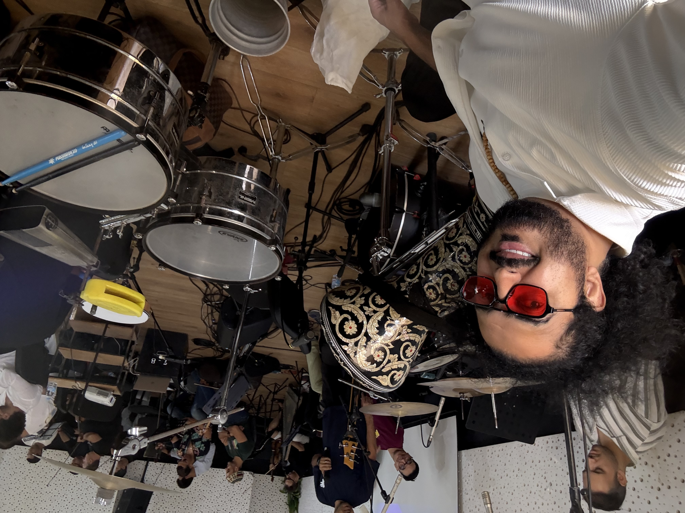
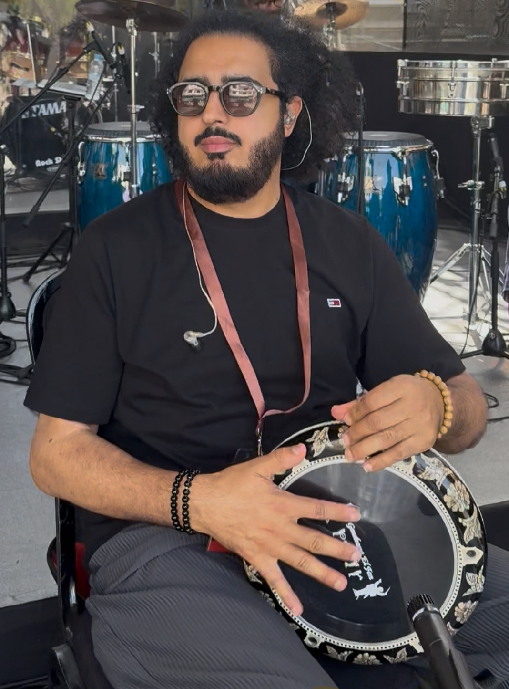
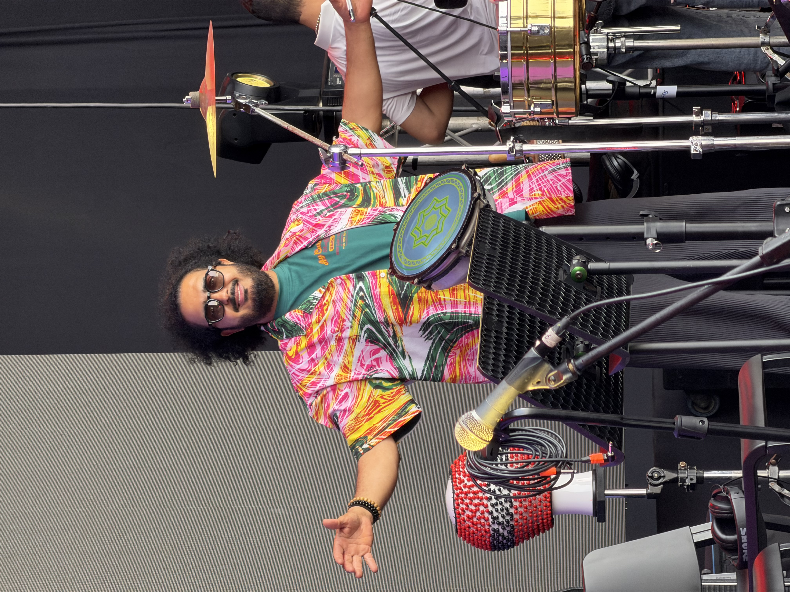
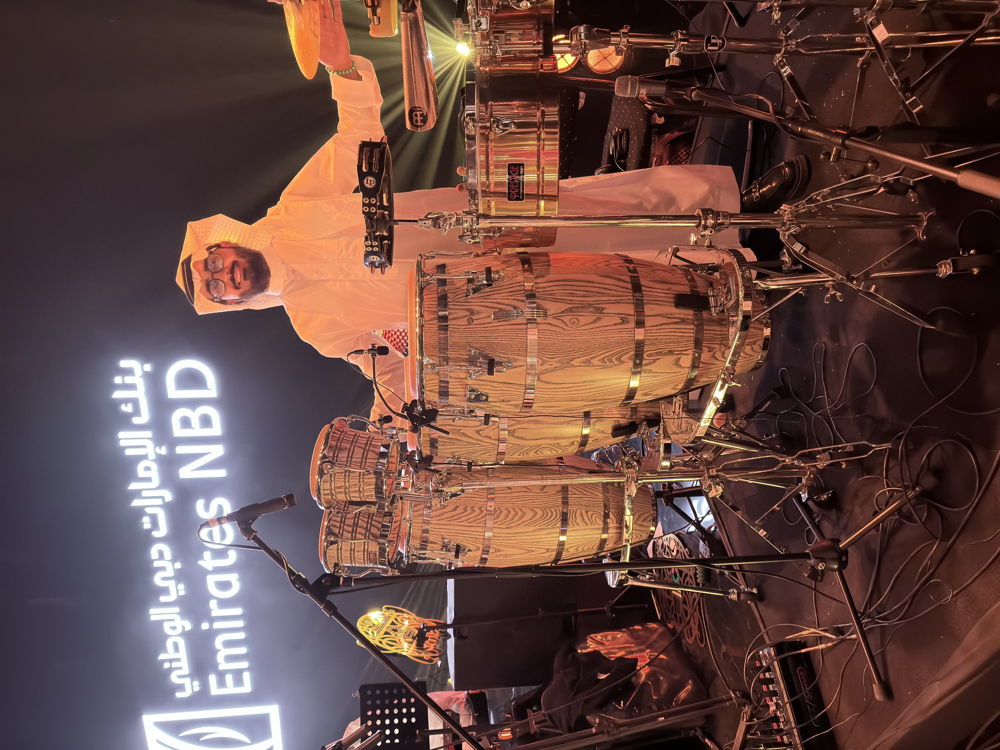
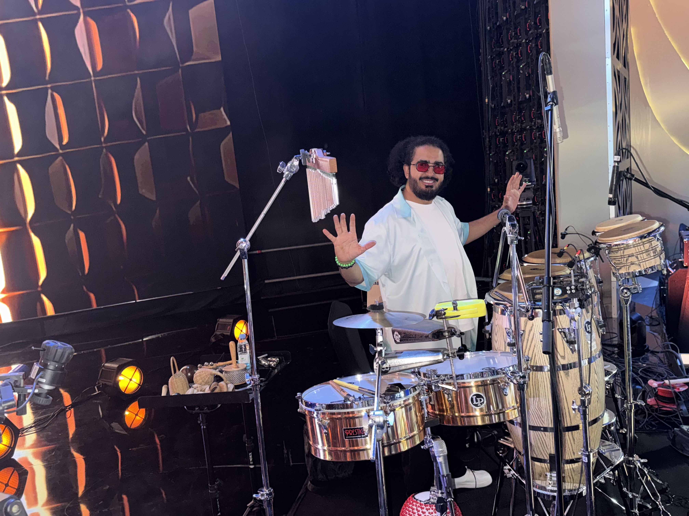
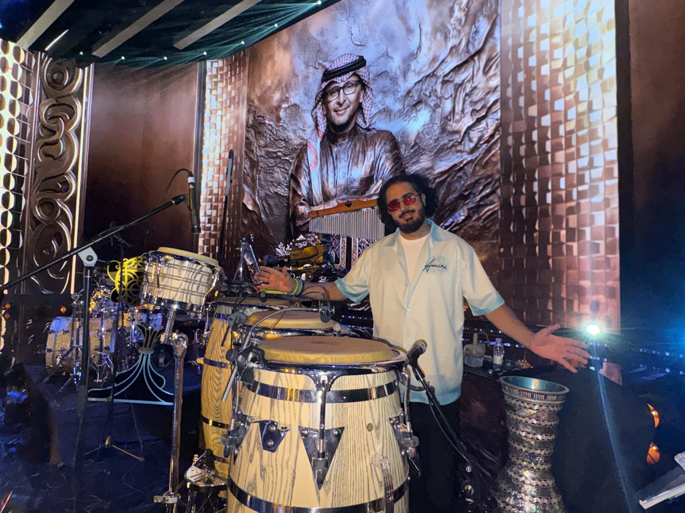
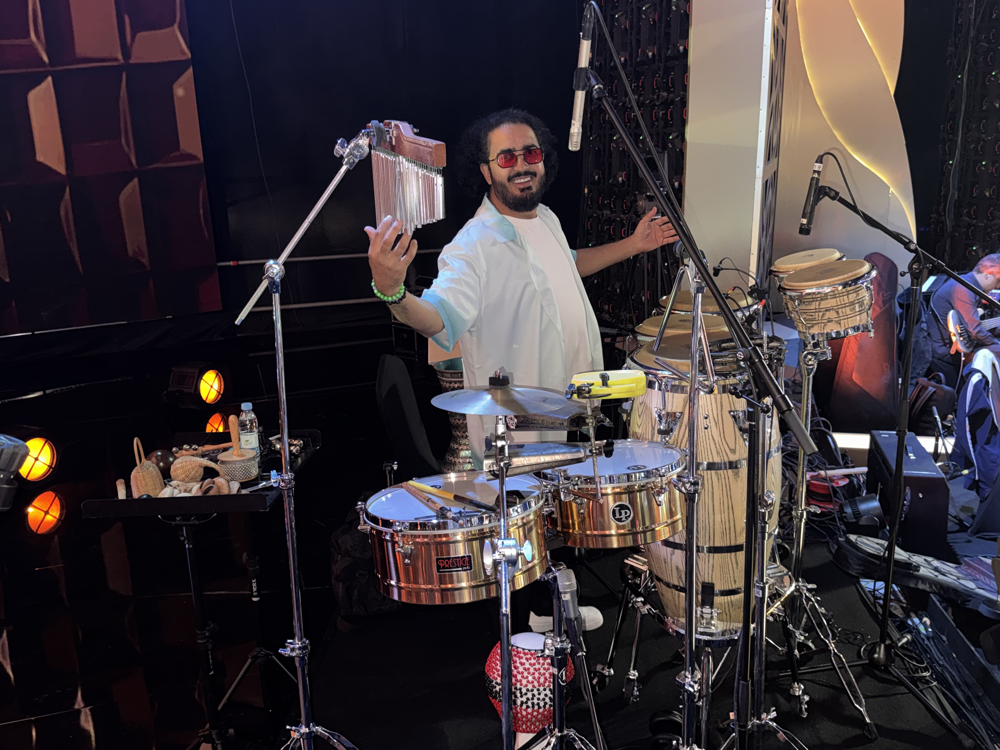
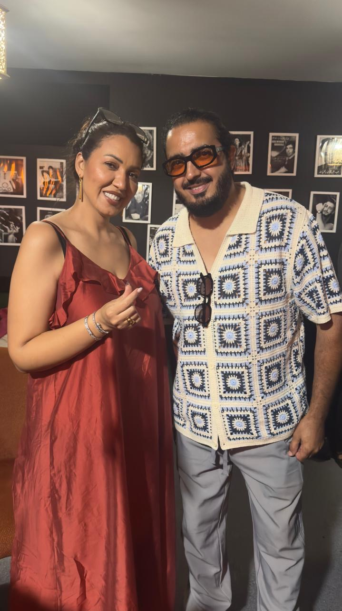

Master of Oriental Percussion
Known for lightning-fast techniques, high-speed solos and precise transitions across eastern rhythms — Maqsoum, Baladi — as well as Moroccan and global grooves.
Moroccan Percussionist · Darbuka Soloist
A rhythmic journey bridging Morocco, the Middle East and the world — one darbuka solo at a time.

Mustapha Antari is a celebrated Moroccan percussionist and solo recording artist widely recognized for his mastery of the darbuka (oriental goblet drum) and his work in global rhythm fusion. Originating from the Moroccan city of Salé, his technical agility and precise solo phrasing have carried the darbuka onto Arab and international stages.
مصطفى عنتري ضابط إيقاع وعازف دربوكة مغربي شهير، يُعتبر من أبرز عازفي الإيقاع الشرقي والمغربي والعالمي في المنطقة. ينحدر من مدينة سلا المغربية، واستطاع بفضل مهارته العالية أن يصل بآلة الدربوكة إلى المسارح العربية والعالمية.
Known for lightning-fast techniques, high-speed solos and precise transitions across eastern rhythms — Maqsoum, Baladi — as well as Moroccan and global grooves.
Frequent appearances at major concerts, music festivals and television broadcasts across Morocco and the Arab world, sharing stages with renowned Arab singers (including Kadem Al Sahir) and show ensembles.
On Instagram (@antari_mustapha1) he shares solo performance clips, back-stage footage from studio sessions, live highlights and simplified masterclasses on different rhythms.
On the Footsteps of Ibn Battuta
A sonic journey connecting the diverse cultures of Africa, the Middle East and Asia through rhythm — one of his most prominent musical projects and albums.








Bookings, collaborations and lessons — reach out through any channel.